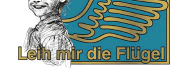

左利きイラストレーターのページ nikoniko-illustrator's pages
☆にこにこイラストレーション nikoniko illustrations☆
☆左手描きイラストレーター 藤嶋芳☆
☆left-handed illustrator FUJISHIMA Kaoru☆

"nikoniko" is a Japanese onomatopoeia which describes a merry smile.